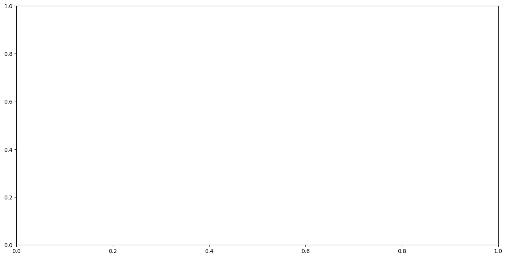
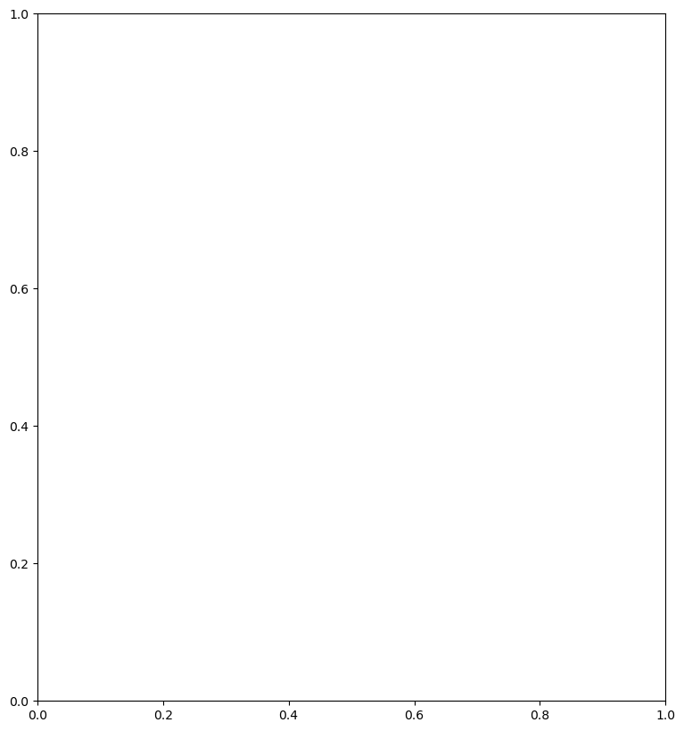

Classification in Python using pyjeo and sklearn
[1]:
from IPython.display import display
import geopandas as gpd
---------------------------------------------------------------------------
ModuleNotFoundError Traceback (most recent call last)
Cell In[1], line 2
1 from IPython.display import display
----> 2 import geopandas as gpd
ModuleNotFoundError: No module named 'geopandas'
[2]:
from sklearn.ensemble import RandomForestClassifier
from sklearn.model_selection import train_test_split
from sklearn.metrics import confusion_matrix
from sklearn.metrics import accuracy_score
---------------------------------------------------------------------------
ModuleNotFoundError Traceback (most recent call last)
Cell In[2], line 1
----> 1 from sklearn.ensemble import RandomForestClassifier
2 from sklearn.model_selection import train_test_split
3 from sklearn.metrics import confusion_matrix
ModuleNotFoundError: No module named 'sklearn'
[3]:
from datetime import datetime
import matplotlib.pyplot as plt
import numpy as np
import pyjeo as pj
import pandas as pd
import geopandas as gpd
---------------------------------------------------------------------------
ModuleNotFoundError Traceback (most recent call last)
Cell In[3], line 4
2 import matplotlib.pyplot as plt
3 import numpy as np
----> 4 import pyjeo as pj
5 import pandas as pd
6 import geopandas as gpd
ModuleNotFoundError: No module named 'pyjeo'
Create reference data for training
[4]:
# ! wget -P /media/sf_LVM_shared/my_SE_data/exercise https://github.com/ec-jrc/jeolib-pyjeo/blob/master/tests/data/modis_ndvi_2010.tif
# ! wget -P /media/sf_LVM_shared/my_SE_data/exercise https://github.com/ec-jrc/jeolib-pyjeo/blob/master/tests/data/modis_ndvi_training.sqlite
! curl -H 'Accept: application/vnd.github.v3.raw' -O -L 'https://github.com/ec-jrc/jeolib-pyjeo/raw/master/tests/data/modis_ndvi_training.sqlite'
! curl -H 'Accept: application/vnd.github.v3.raw' -O -L 'https://github.com/ec-jrc/jeolib-pyjeo/raw/master/tests/data/modis_ndvi_2010.tif'
!pwd
% Total % Received % Xferd Average Speed Time Time Time Current
Dload Upload Total Spent Left Speed
0 0 0 0 0 0 0 0 --:--:-- --:--:-- --:--:-- 0
100 24576 100 24576 0 0 24544 0 0:00:01 0:00:01 --:--:-- 7722k
% Total % Received % Xferd Average Speed Time Time Time Current
Dload Upload Total Spent Left Speed
0 0 0 0 0 0 0 0 --:--:-- 0:00:01 --:--:-- 0
100 3079k 100 3079k 0 0 1388k 0 0:00:02 0:00:02 --:--:-- 6671k
/home/ravy/Scrivania/SE_docs/SE_docs/source/CASESTUDY
[5]:
reference = pj.JimVect('modis_ndvi_training.sqlite')
jim = pj.Jim('modis_ndvi_2010.tif', band2plane=True)
---------------------------------------------------------------------------
NameError Traceback (most recent call last)
Cell In[5], line 1
----> 1 reference = pj.JimVect('modis_ndvi_training.sqlite')
2 jim = pj.Jim('modis_ndvi_2010.tif', band2plane=True)
NameError: name 'pj' is not defined
[6]:
dates = [datetime.strptime('01-' + str(month) + '-2010', "%d-%m-%Y") for month in range(1, 13)]
jim.properties.setDimension({'band': ['NDVI'], 'plane': dates})
---------------------------------------------------------------------------
NameError Traceback (most recent call last)
Cell In[6], line 2
1 dates = [datetime.strptime('01-' + str(month) + '-2010', "%d-%m-%Y") for month in range(1, 13)]
----> 2 jim.properties.setDimension({'band': ['NDVI'], 'plane': dates})
NameError: name 'jim' is not defined
[7]:
jim.xr()
---------------------------------------------------------------------------
NameError Traceback (most recent call last)
Cell In[7], line 1
----> 1 jim.xr()
NameError: name 'jim' is not defined
[8]:
jim.xr().NDVI.plot(col='time', col_wrap=6)
---------------------------------------------------------------------------
NameError Traceback (most recent call last)
Cell In[8], line 1
----> 1 jim.xr().NDVI.plot(col='time', col_wrap=6)
NameError: name 'jim' is not defined
[9]:
pd.DataFrame(reference.dict())
---------------------------------------------------------------------------
NameError Traceback (most recent call last)
Cell In[9], line 1
----> 1 pd.DataFrame(reference.dict())
NameError: name 'pd' is not defined
[10]:
featurevect = pj.geometry.extract(reference, jim, rule=['allpoints'],
output='/vsimem/features.sqlite',
oformat='SQLite',
co=['OVERWRITE=YES'],
classes=[1, 2],
copy='label')
gdf = gpd.read_file('/vsimem/features.sqlite')
gdf
---------------------------------------------------------------------------
NameError Traceback (most recent call last)
Cell In[10], line 1
----> 1 featurevect = pj.geometry.extract(reference, jim, rule=['allpoints'],
2 output='/vsimem/features.sqlite',
3 oformat='SQLite',
4 co=['OVERWRITE=YES'],
5 classes=[1, 2],
6 copy='label')
7 gdf = gpd.read_file('/vsimem/features.sqlite')
8 gdf
NameError: name 'pj' is not defined
[11]:
plt.figure(figsize=(16, 8))
ax = plt.subplot()
jim.xr().NDVI.isel(time = 0).plot(ax = ax)
gdf.plot(column = 'label', ax = ax, legend = True, categorical=True, cmap='Set1')
---------------------------------------------------------------------------
NameError Traceback (most recent call last)
Cell In[11], line 3
1 plt.figure(figsize=(16, 8))
2 ax = plt.subplot()
----> 3 jim.xr().NDVI.isel(time = 0).plot(ax = ax)
4 gdf.plot(column = 'label', ax = ax, legend = True, categorical=True, cmap='Set1')
NameError: name 'jim' is not defined

[12]:
pd.DataFrame(featurevect.dict())
---------------------------------------------------------------------------
NameError Traceback (most recent call last)
Cell In[12], line 1
----> 1 pd.DataFrame(featurevect.dict())
NameError: name 'pd' is not defined
Train the model
[13]:
x = featurevect.np()[:, 1:]
y = featurevect.np()[:, 0:1]
x_train, x_test, y_train, y_test = train_test_split(x, y,
test_size=0.33,
random_state=42)
rfModel = RandomForestClassifier(n_estimators=100,
max_depth=9,
min_samples_leaf=5,
min_samples_split=3,
criterion='gini')
rfModel.fit(x_train, y_train.ravel())
---------------------------------------------------------------------------
NameError Traceback (most recent call last)
Cell In[13], line 1
----> 1 x = featurevect.np()[:, 1:]
2 y = featurevect.np()[:, 0:1]
3 x_train, x_test, y_train, y_test = train_test_split(x, y,
4 test_size=0.33,
5 random_state=42)
NameError: name 'featurevect' is not defined
[14]:
y_predict = rfModel.predict(x_test)
print(confusion_matrix(y_test, y_predict))
print('accuracy score: {}'.format(accuracy_score(y_test, y_predict)))
---------------------------------------------------------------------------
NameError Traceback (most recent call last)
Cell In[14], line 1
----> 1 y_predict = rfModel.predict(x_test)
2 print(confusion_matrix(y_test, y_predict))
3 print('accuracy score: {}'.format(accuracy_score(y_test, y_predict)))
NameError: name 'rfModel' is not defined
Prediction
[15]:
x = jim.np()
x = x.reshape(jim.properties.nrOfPlane(), jim.properties.nrOfRow() * \
jim.properties.nrOfCol()).T
jim_class = pj.Jim(ncol=jim.properties.nrOfCol(),
nrow=jim.properties.nrOfRow(),
otype='Byte')
jim_class.properties.copyGeoReference(jim)
jim_class.np()[:] = rfModel.predict(x).astype(np.dtype(np.uint8)).\
reshape(jim.properties.nrOfRow(), jim.properties.nrOfCol())
jim_class.properties.setDimension(['water'], 'band')
---------------------------------------------------------------------------
NameError Traceback (most recent call last)
Cell In[15], line 1
----> 1 x = jim.np()
2 x = x.reshape(jim.properties.nrOfPlane(), jim.properties.nrOfRow() * \
3 jim.properties.nrOfCol()).T
5 jim_class = pj.Jim(ncol=jim.properties.nrOfCol(),
6 nrow=jim.properties.nrOfRow(),
7 otype='Byte')
NameError: name 'jim' is not defined
[16]:
plt.figure(figsize=(20, 10))
ax1 = plt.subplot(121)
jim.xr().NDVI.isel(time = 0).plot(ax = ax1)
ax2 = plt.subplot(122)
jim_class.xr().water.plot(cmap = 'Set2', levels = [1, 2], ax = ax2)
---------------------------------------------------------------------------
NameError Traceback (most recent call last)
Cell In[16], line 3
1 plt.figure(figsize=(20, 10))
2 ax1 = plt.subplot(121)
----> 3 jim.xr().NDVI.isel(time = 0).plot(ax = ax1)
4 ax2 = plt.subplot(122)
5 jim_class.xr().water.plot(cmap = 'Set2', levels = [1, 2], ax = ax2)
NameError: name 'jim' is not defined

Exercise 1
Use a single feature to train the classifier (e.g., month of June only)
Check the accuracy
What is the accuracy?
Exercise 2
Replace the Random Forest with a Support Vector Machine (hint: use the preprocessing.MinMaxScaler to scale the input data)
[17]:
from sklearn.svm import SVC
from sklearn import preprocessing
---------------------------------------------------------------------------
ModuleNotFoundError Traceback (most recent call last)
Cell In[17], line 1
----> 1 from sklearn.svm import SVC
2 from sklearn import preprocessing
ModuleNotFoundError: No module named 'sklearn'
What is the accuracy?
[18]:
y_predict = svmModel.predict(preprocessing.MinMaxScaler().fit_transform(x_test))
print(confusion_matrix(y_test, y_predict))
print('accuracy score: {}'.format(accuracy_score(y_test, y_predict)))
---------------------------------------------------------------------------
NameError Traceback (most recent call last)
Cell In[18], line 1
----> 1 y_predict = svmModel.predict(preprocessing.MinMaxScaler().fit_transform(x_test))
2 print(confusion_matrix(y_test, y_predict))
3 print('accuracy score: {}'.format(accuracy_score(y_test, y_predict)))
NameError: name 'svmModel' is not defined
Prediction
[19]:
x = jim.np()
x = x.reshape(jim.properties.nrOfPlane(), jim.properties.nrOfRow() * \
jim.properties.nrOfCol()).T
jim_class = pj.Jim(ncol=jim.properties.nrOfCol(),
nrow=jim.properties.nrOfRow(), otype='Byte')
jim_class.properties.copyGeoReference(jim)
jim_class.np()[:] =
jim_class.properties.setDimension(['water'], 'band')
Cell In[19], line 9
jim_class.np()[:] =
^
SyntaxError: invalid syntax
Plot
[20]:
plt.figure(figsize=(20, 10))
ax1 = plt.subplot(121)
jim.xr().NDVI.isel(time = 0).plot(ax = ax1)
ax2 = plt.subplot(122)
jim_class.xr().water.plot(cmap = 'Set2', levels = [1, 2], ax = ax2)
---------------------------------------------------------------------------
NameError Traceback (most recent call last)
Cell In[20], line 3
1 plt.figure(figsize=(20, 10))
2 ax1 = plt.subplot(121)
----> 3 jim.xr().NDVI.isel(time = 0).plot(ax = ax1)
4 ax2 = plt.subplot(122)
5 jim_class.xr().water.plot(cmap = 'Set2', levels = [1, 2], ax = ax2)
NameError: name 'jim' is not defined
